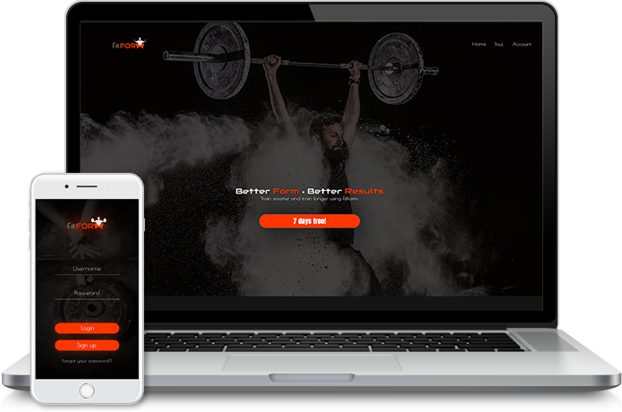

FitForm
A fitness app aimed to help gym goers and non-gym goers maintain a functional and mobile life.
About
It seems like every year, there is some new fitness trend taking over that is marketed as the “latest and greatest”. With the rise of
technology, being sedentary has also become the new norm. Often times people with limited fitness knowledge are participating in
trends and injuring themselves due to no basic fitness knowledge. Every day, there are more than 10,000 people treated in
emergency rooms across the country for injuries stemming from exercise, sports, recreation, and immobility.
FitForm is an application I designed that utilizes both fitness and technology to bring people back to their foundation. Users select different
exercises to perform, then the application will use the smart phones camera to scan their bodies and assess their form against correct form.
Depending on the results, each user will receive suggestions for corrective exercises that will help them achieve proper body mechanics. The
better the form, the better the results, the less injuries there are.
MY ROLE
As an idea envisioned myself, I was able to play all the roles of the project: client and designer. It was a lot of fun being able to fully design and create how everything would be presented.
Objective
The primary goals of the project were:
- Design a landing page for a mobile fitness application
- Create a palette that is energetic and professional
- Demonstrate some of the applications features
- Give data on how this application is beneficial
The Research
- This group consisted of 65% of respondents
- Out of the 65% that said they did, 61% failed to perform the squat correctly
- Of the 61% of who failed, 76% were between the age of 18 and 34
- This group consisted of 35% of the respondents
- Out of the 35% that did not know, 71% failed to perform the squat correctly
- Of the 71% who failed, 28% were between the ages of 18 and 24
- About 60% of people used free weights
- 74% said they have never worked with a trainer
- 75% of free weight users fell within the 18-34 years of age demographic
- 75% of people who marked they had been injured in the gym fell between the ages of 18 and 34.
Personas
The personas created were designed to depict various people with various fitness levels. FitForm will be available for everyone, so it was important that no matter what their knowledge is, there would be something for them and it would be easy to use.The personas also presented us with information from our users in regards to what types of features they were looking for on a fitness application.

Name: Sharon Labieniec
Goals & Motivations
Goals & Motivations
Name: Sharon Labieniec
Goals & Motivations
Goals & Motivations
Iteration & Design
Because of the nature of only creating a landing page and because it was a new idea, it was important to know exactly what users would be specifically looking for. For this reason the layout was iterated multiple times to try to best deliver and highlight the areas thought to be most important. I also wanted to point out the pricing of the application as an additional highlight.

Preference Testing
Preference testing was a big part of this project. Making sure the visual features of the landing page matched well with the mobile app. For this reason I created a style guide that could be applied to both.


{kind=link}
The Results
The FitForm landing page demonstrates effectively all the important features that a majority of people would use or want to use out of a fitness application. In an energetic and professional style, the landing page also showcases how this application can easily be beneficial by being incorporated into someone's life from a monetary standpoint and from an overall physical well being standpoint.